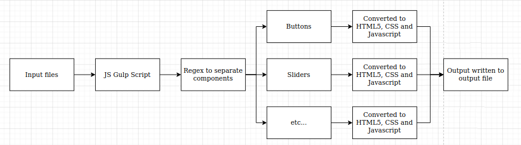

As part of my first internship, I was tasked with fixing legacy software that had become incompatible with the latest hardware. The solution I designed and implemented involved the creation of an HTML1 to HTML5 converter.
The problem was the issue of repurposing some old software to work on newer, incompatible hardware. Various solutions had already been put forward that were too time consuming (creating brand new software to replace the old software) and too limited in their capabilities. The solution I came up with was to continue using the old software, but to simply convert the output so that it could be usable on the new hardware. This solution was cheap, easy to implement and allowed the extensibility to any kind of capabilities. Thus, it was the perfect solution for the problem at hand.
Essentially, a javascript Gulp task pipeline was created. Firstly, it would scan through the given HTML1 files (outputted by the old software) and pass them to various functions. Each function would replace certain, common aspects of the file with compatible HTML5 code. This included buttons, button groups, titles, backgrounds, sliders and more. It would do this by running a regex on the files and finding these elements. Then, it would rip the necessary HTML5, CSS and Javascript information using further regexes, format it and paste into the output file. This would be done for each and every HTML file and the output would be a converted set of web pages. These were then usable on the new hardware. Voila!